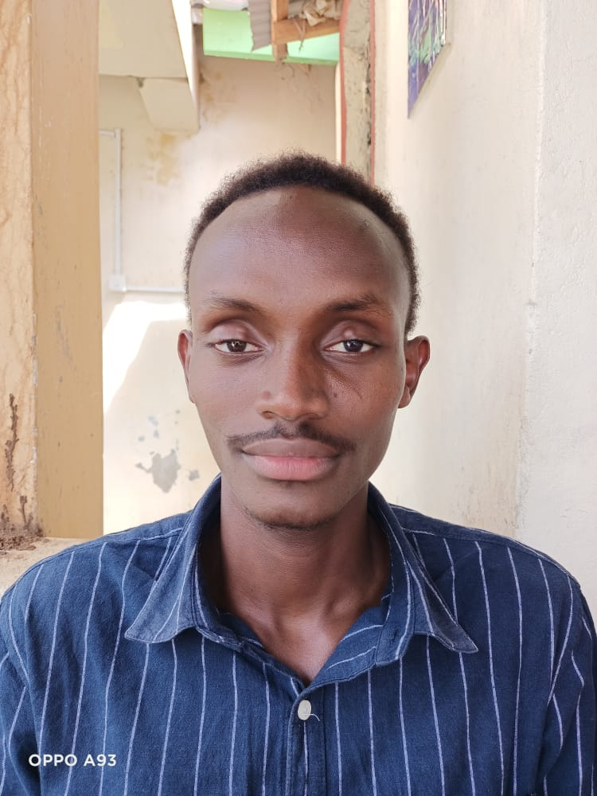

Some of Our Players
CongoNets is comprised of five teams namely,
CongoNets Senior Team, YoungNets, JuniorNets, CongoLets
for the ladies team and another CongoNets team playing
in the KBF DIV2 League.

Our Team Captain
He is the Congo Nets team captain whose name is Kenneth Karanja
CongoNets MBA Player
He is the Congo Nets MBA player whose name is Abdul Kareem

CongoNets DIV2 Player
He is the Congo Nets DIV2 player whose name is Richard Stanley